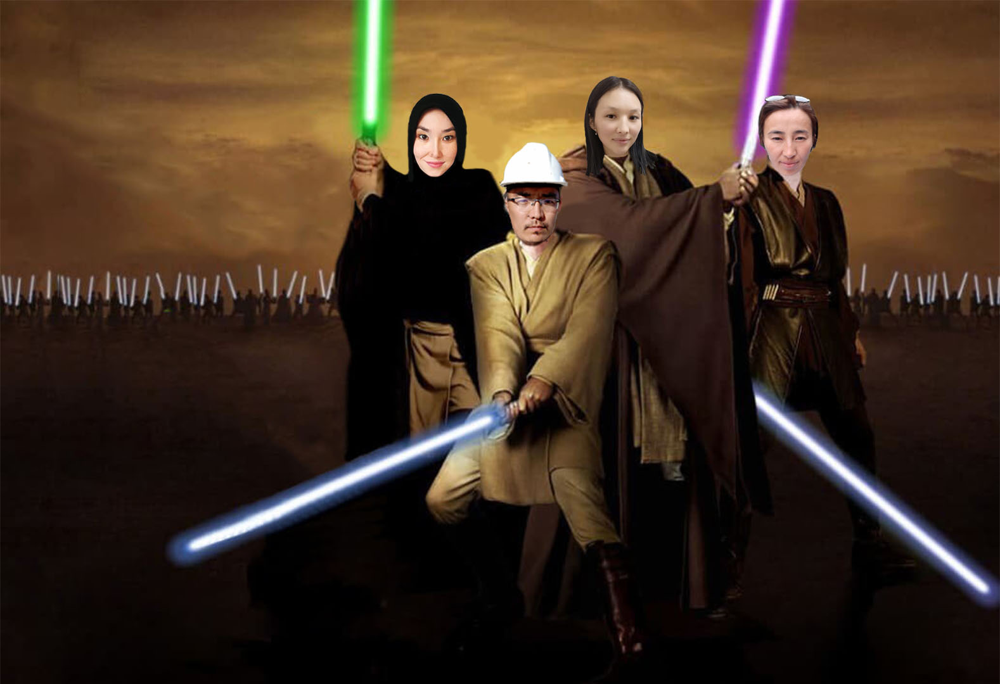

You can see our work on


We are "Jyldyz Askerleri" Jedi Team. We are participating in "Kelechek" project as students of the "Jyldyz Academy"
Our team consists of ambitious, diligent like-minded people who want to conquer an incredibly interesting world of IT, as well as contribute into this world.
Why Jedi? Because we are adherents of the bright side (wisdom). We are also warriors of the "Kelechek" galaxy.
Our weapons are knowledge, justice and empathy.
A Jedi must be able not only to think, but also to act. We exclusively use a new knowledge to make the universe better.
You can see our work on |
|||
|
|
|
|
May the Force be with you!